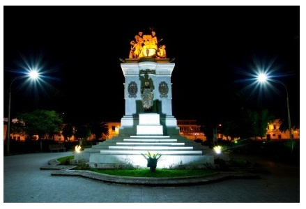
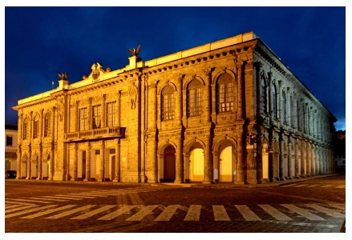
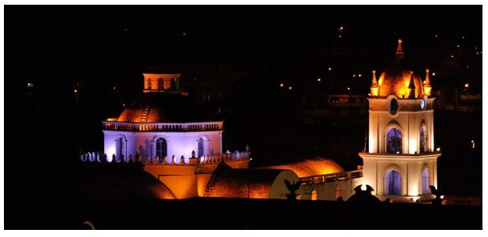
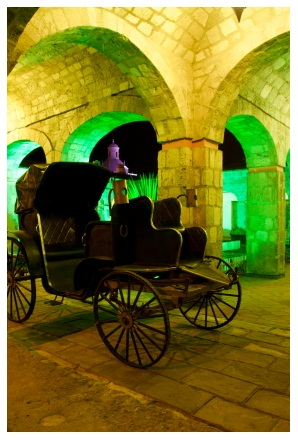
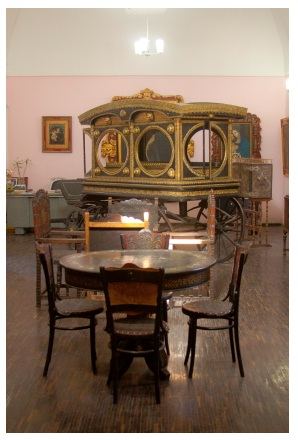

Guía Turística Latacunga
TRADICIÓN, CULTURA Y GASTRONOMÍA
Latacunga
Estamos ubicados entre las ciudades de Quito y Ambato, a una altura de 2.850 m.s.n.m., y con un clima templado y frío. Latacunga no es solo la Fiesta de la Mama Negra, sino cuenta con atractivos turísticos como: las Iglesias, el parque de La Laguna, el Centro Histórico, etc.

FOTO: DIEGO PAREDES B.
Cuando caminamos por esta cálida y pasiva ciudad, observamos que sus calles son estrechas, angostas y empedradas, por lo que esto resalta el ambiente colonial que guarda la ciudad.

FOTO: DIEGO PAREDES B.
La Catedral
Tiene un estilo románico, con piedra pómez en su interior y con campanarios que anuncian las horas de las eucaristías.

FOTO: MIGUEL ANGEL RENGIFO ROBAYO

Casa de los Marqueses de Maenza
Se encuentra en el centro de Latacunga, su construcción es en piedra pómez con columnas y arcos de gran imponencia que era lo que se utilizaba en la época que fue construida.
Posee varios salones, en los que se puede encontrar una Biblioteca, Hemeroteca, en la cual consta la historia de la ciudad, un Museo de Numismática y Filatelia, Museo de Arte Religioso y el Salón Amarillo, el mismo que tiene piezas de esculturas, muebles, y otros.

FOTO: DIEGO PAREDES B.